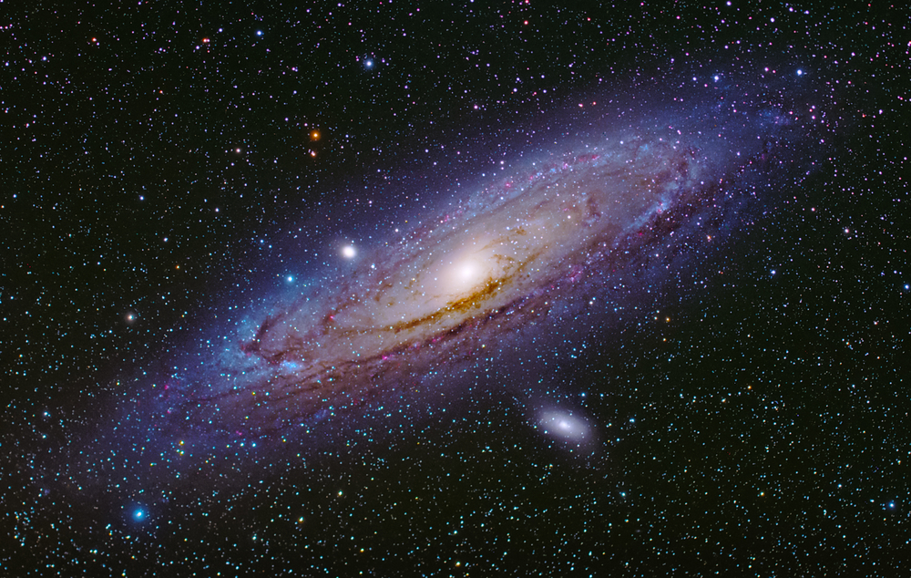

1 space exploration is the process of exploring the regions of the universe beyond Earth's atmosphere using crewed and uncrewed spacecraft, and then using the knowledge gathered to advance humankind's understanding of the universe. The Chronology of Crewed Spaceflights section contains a comprehensive record of all crewed spaceflights, together with information on the crew and achievements of each mission.
2 People have long gazed up at the sky and pondered the nature of the objects visible there. It became feasible to launch machines, animals, and eventually humans above Earth's atmosphere into space with the advent of rockets and other technological advancements in the 20th century. But long before technology allowed for these successes, many people—including scientists, writers, and artists—had developed a strong interest in space travel, in addition to pilots of planes and scientists. As Tom Wolfe noted in The Right Stuff (1979), "professional astronauts and laypeople alike accept at their great peril to sit "on top of" spacecraft because of the tremendous pull that space travel has always had on the imagination.
In the decades following the first Sputnik and Explorer satellites, the ability to put their instruments into outer space gave scientists the opportunity to acquire new information about the natural universe, information that in many cases would have been unobtainable any other way. Space science added a new dimension to the quest for knowledge, complementing and extending what had been gained from centuries of theoretical speculations and ground-based observations. After Gagarin’s 1961 flight, space missions involving human crews carried out a range of significant research, from on-site geologic investigations on the Moon to a wide variety of observations and experiments aboard orbiting spacecraft. In particular, the presence in space of humans as experimenters and, in some cases, as experimental subjects facilitated studies in biomedicine and materials science. Nevertheless, most space science was, and continues to be, performed by robotic spacecraft in Earth orbit, in other locations from which they observe the universe, or on missions to various bodies in the solar system. In general, such missions are far less expensive than those involving humans and can carry sophisticated automated instruments to gather a wide variety of relevant data. In addition to the United States and the Soviet Union, several other countries achieved the capability of developing and operating scientific spacecraft and thus carrying out their own space science missions. They include Japan, China, Canada, India, and a number of European countries such as the United Kingdom, France, Italy, and Germany, acting alone and through cooperative organizations, particularly the European Space Agency. Furthermore, many other countries became involved in space activities through the participation of their scientists in specific missions. Bilateral or multilateral cooperation between various countries in carrying out space science missions grew to be the usual way of proceeding. Scientific research in space can be divided into five general areas: (1) solar and space physics, including study of the magnetic and electromagnetic fields in space and the various energetic particles also present, with particular attention to their interactions with Earth, (2) exploration of the planets, moons, asteroids, comets, meteoroids, and dust in the solar system, (3) study of the origin, evolution, and current state of the varied objects in the universe beyond the solar system, (4) research on nonliving and living materials, including humans, in the very low gravity levels of the space environment, and (5) study of Earth from space. Solar and space physics auroral oval auroral oval Earth's full North Polar auroral oval, in an image taken in ultraviolet light by the U.S. Polar spacecraft over northern Canada, April 6, 1996. In the colour-coded image, which simultaneously shows dayside and nightside auroral activity, the most intense levels of activity are red, and the lowest levels are blue. Polar, launched in February 1996, was designed to further scientists' understanding of how plasma energy contained in the solar wind interacts with Earth's magnetosphere. The first scientific discovery made with instruments orbiting in space was the existence of the Van Allen radiation belts, discovered by Explorer 1 in 1958. Subsequent space missions investigated Earth’s magnetosphere, the surrounding region of space in which the planet’s magnetic field exerts a controlling effect (see Earth: The magnetic field and magnetosphere). Of particular and ongoing interest has been the interaction of the flux of charged particles emitted by the Sun, called the solar wind, with the magnetosphere. Early space science investigations showed, for example, that luminous atmospheric displays known as auroras are the result of this interaction, and scientists came to understand that the magnetosphere is an extremely complex phenomenon. NASA's Parker Solar Probe spacecraft NASA's Parker Solar Probe spacecraft NASA's Parker Solar Probe spacecraft has traveled closer to the Sun than any other mission in history to investigate its highly charged magnetic field. See all videos for this article The focus of inquiry in space physics was later extended to understanding the characteristics of the Sun, both as an average star and as the primary source of energy for the rest of the solar system, and to exploring space between the Sun and Earth and other planets (see interplanetary medium). The magnetospheres of other planets, particularly Jupiter with its strong magnetic field, also came under study. Scientists sought a better understanding of the internal dynamics and overall behaviour of the Sun, the underlying causes of variations in solar activity, and the way in which those variations propagate through space and ultimately affect Earth’s magnetosphere and upper atmosphere. The concept of space weather was advanced to describe the changing conditions in the Sun-Earth region of the solar system. Variations in space weather can cause geomagnetic storms that interfere with the operation of satellites and even systems on the ground such as power grids. solar flare photographed by Skylab solar flare photographed by Skylab A spectacular flare on the Sun, photographed in extreme ultraviolet light on December 19, 1973, by the third astronaut crew aboard the U.S. space station Skylab. To carry out the investigations required for addressing these scientific questions, the United States, Europe, the Soviet Union, and Japan developed a variety of space missions, often in a coordinated fashion. In the United States, early studies of the Sun were undertaken by a series of Orbiting Solar Observatory satellites (launched 1962–75) and the astronaut crews of the Skylab space station in 1973–74, using that facility’s Apollo Telescope Mount. These were followed by the Solar Maximum Mission satellite (launched 1980). ESA developed the Ulysses mission (1990) to explore the Sun’s polar regions. Solar-terrestrial interactions were the focus of many of the Explorer series of spacecraft (1958–75) and the Orbiting Geophysical Observatory satellites (1964–69). In the 1980s NASA, ESA, and Japan’s Institute of Space and Astronautical Science undertook a cooperative venture to develop a comprehensive series of space missions, named the International Solar-Terrestrial Physics Program, that would be aimed at full investigation of the Sun-Earth connection. This program was responsible for the U.S. Wind (1994) and Polar (1996) spacecraft, the European Solar and Heliospheric Observatory (SOHO; 1995) and Cluster (2000) missions, and the Japanese Geotail satellite (1992).
Explorer 1 found the Van Allen radiation belts in 1958, which was the first scientific finding made using equipment in orbit. The surrounding region of space where the planet's magnetic field has a controlling impact is called the magnetosphere, and it was the subject of investigation by later space missions (see Earth: The magnetic field and magnetosphere). The interaction between the solar wind, or flow of charged particles released by the Sun, and the magnetosphere has been of particular and continuous interest. Early space science studies revealed, for instance, that this contact is what causes the bright atmospheric displays known as auroras, which led scientists to realize how intricate the magnetosphere is. Parker Solar Probe, a NASA spacecraft Parker Solar Probe, a NASA spacecraft NASA's Parker Solar